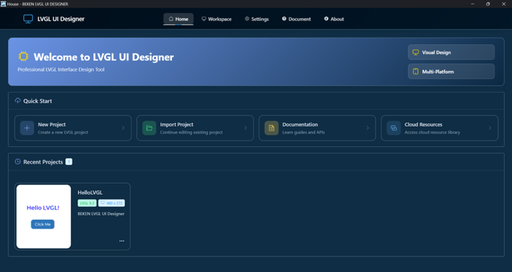
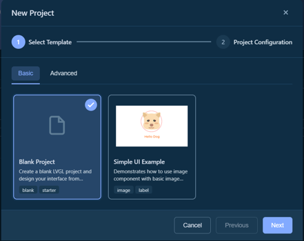
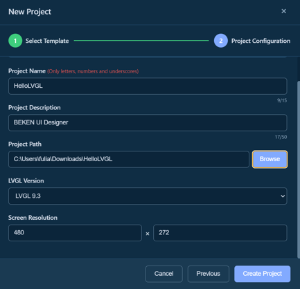

快速开始¶
本指南将帮助您快速上手BEKEN LVGL UI Designer，在 5 分钟内创建您的第一个 UI 项目。
🎯 创建第一个项目¶
步骤 1：启动应用¶
首次启动BEKEN LVGL UI Designer 后，您会看到首页界面，包含以下选项： - 新建项目 - 创建新的 UI 项目 - 导入项目 - 导入现有项目 - 最近项目 - 快速打开最近使用的项目

步骤 2：创建新项目¶
- 点击 "新建项目" 按钮
- 在弹出的对话框中选择项目模板：
- 空白项目 - 从零开始设计
- 示例模板 - 使用预设的示例项目

- 配置项目信息：
- 项目名称：为您的项目命名(项目名称只能包含：数字，字母，下划线)
- 保存位置：选择项目保存的文件夹
- 屏幕尺寸：设置目标设备的屏幕分辨率（例如：480x272）

- 点击 "创建" 按钮
步骤 3：认识工作台¶
创建项目后，您将进入工作台界面，主要包含 5 个区域：
- 工具栏：项目信息、保存、撤销/重做、预览等功能
- 组件库：所有可用的 UI 组件（按钮、标签等）
- 画布：可视化设计区域，拖拽组件到这里
- 组件树：显示页面和组件的层级结构
- 属性面板：编辑选中组件的属性和样式

🎨 设计第一个界面¶
添加标签¶
- 在 组件库 拖拽 "Label" 到画布中
- 在 属性面板 找到 "Text" 属性
- 输入文本：
Hello LVGL! - 调整字体大小和颜色：
- 选择 "字体" 分组
- 设置 字号 为 24
- 设置 颜色 为蓝色
添加按钮¶
- 从 组件库 拖拽 "Button" 到画布中
- 将按钮放在标签下方
- 设置按钮文本为
Click Me - 调整按钮样式：
- 在 样式 面板中设置背景颜色
- 设置圆角半径（Border Radius）为 10px
调整布局¶
- 在 画布 中选中组件
- 使用鼠标拖拽调整位置
- 拖拽边缘控制点调整大小
- 或在 属性面板 中精确输入数值

💾 保存项目¶
- 项目会自动保存（查看工具栏的保存状态指示）
- 或按
Ctrl + S手动保存
📄 预览并生成代码¶
预览界面¶
- 点击工具栏的 "代码预览" 按钮
- 选择代码语言：
- C 语言 - 适用于标准 LVGL 项目
- MicroPython - 适用于 MicroPython 环境
- 编译完成后将自动弹出模拟器窗口
- 代码生成在项目目录下